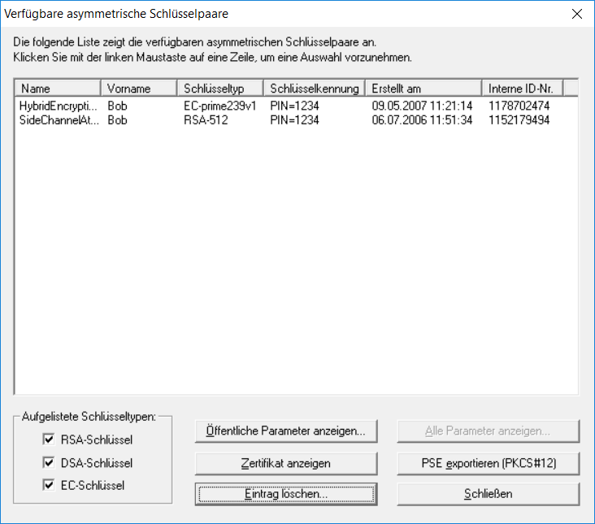

Dieser Dialog wird über den Befehl Schlüssel anzeigen/exportieren aus dem Menü Digitale Signaturen/PKI \ PKI geöffnet.

Im Dialog werden alle verfügbaren asymmetrischen Schlüsselpaare angezeigt.
Mit den Auswahlknöpfen RSA-Schlüssel, DSA-Schlüssel und EC-Schlüssel können Sie auswählen, welche Schlüssel in der Liste angezeigt werden.
Mit Hilfe der Knöpfe Öffentliche Parameter anzeigen, Alle Parameter anzeigen und Zertifikat anzeigen können Sie sich den Inhalt des ausgewählten Zertifikats anzeigen lassen. Um alle Parameter anzuzeigen, wird die PIN der PSE benötigt. Nicht alle Daten sind für alle Zertifikatstypen (RSA, DSA, EC) verfügbar.
Mit dem Knopf Eintrag löschen können Sie nicht mehr benötigte Schlüsselpaare löschen.
Schlüsselpaare können mit PSE exportieren (PKCS #12) in das standardisierte PKCS #12-Format exportiert werden.
Schließen beendet den Dialog.